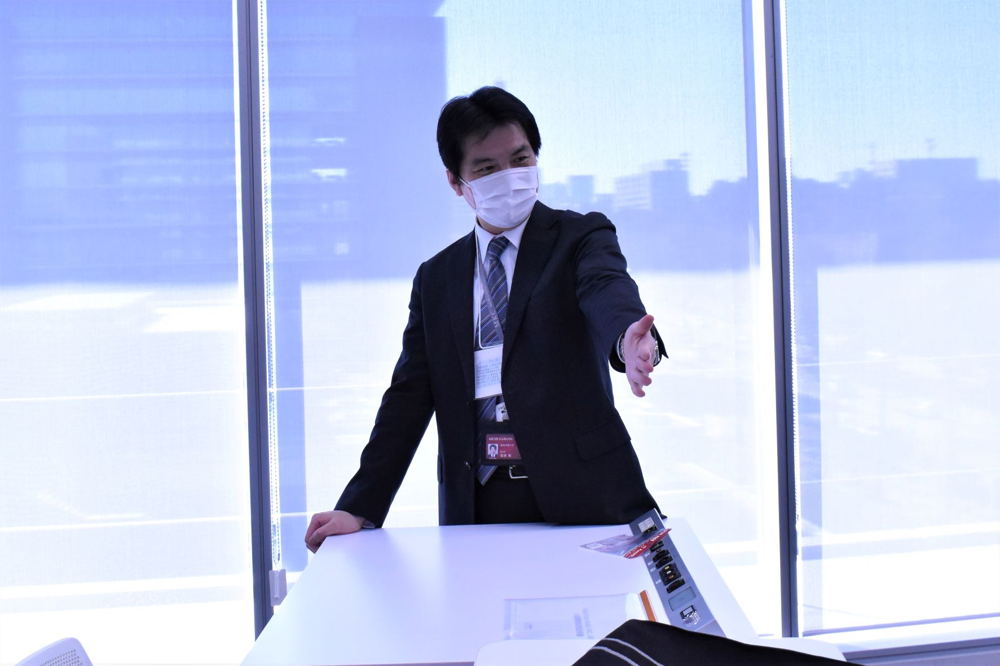
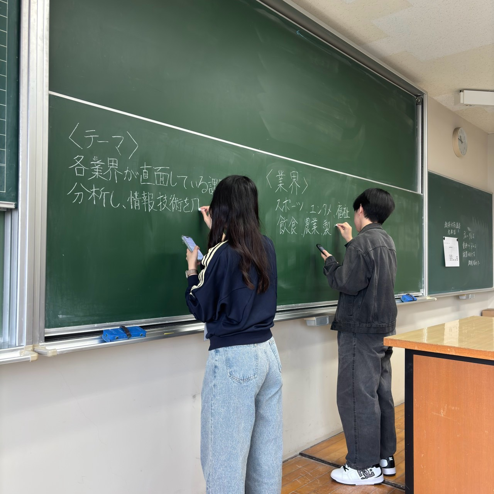
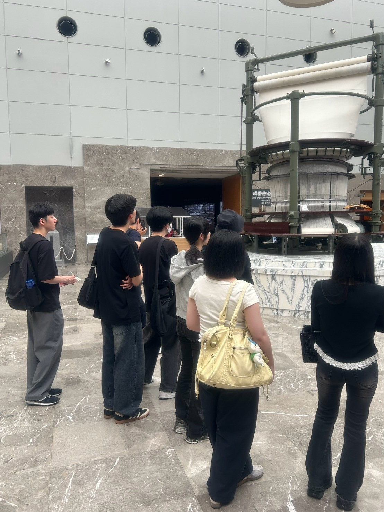
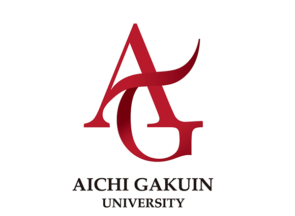

商学部 商学科 ビジネス情報コース
吉田ゼミナールでは、情報処理に関する知識・技術を学ぶだけでなく、課題解決型の演習やグループ研究を通して実践的に学ぶことを大切にしています。
情報分野をこれまで学んでこなかった方やパソコン初心者からのスタートでも大丈夫です。学年を超えたつながりを大切にしながら、資格取得や卒業論文など、一人ひとりの目標に向かって取り組んでいます。
教員紹介 →
情報処理に関する知識・技術などを学びます。
課題解決型の演習を行っています。
様々な行事を通じて学年を超えて交流しています。
学年ごとに取り組んでいるゼミ活動の内容や、合宿などの年間行事の予定を掲載しています。

3年次に取り組むグループ研究、4年次に取り組む卒業論文のテーマをそれぞれ掲載しています。

2年生から4年生まで、学年ごとに活動しているゼミ生を紹介しています。
現在は、高校時代に普通科・総合学科・商業科・工業科をはじめとした多種多様な経歴を持つメンバーがいます。 そのため、出身学科にとらわれず、一緒に学ぶことができます。
それぞれの意気込みや研究テーマ、ゼミの魅力についてのコメントも掲載中です。
メンバーを見る →
卒業後の進路や取得できる資格・検定、よくある質問、在校生・卒業生からのメッセージをまとめています。
ゼミ選びで気になることは、ぜひここでチェックしてみてください。


